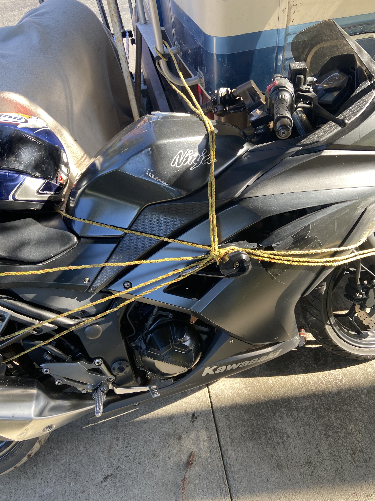
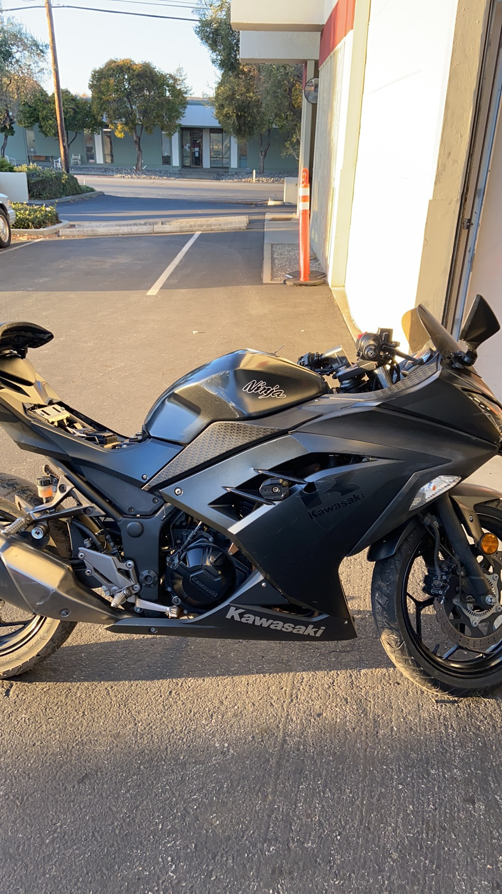

How it started
I got an internet call(anonymous call) at 11 am, I hesitated a few seconds to take because most of those calls are scams, but I took it. It was a female voice saying she is a police officer and my motorcycle is found and it’s in Fremont, she wanted me to stop by ASAP. I was like, What??!! 😮😮 I got ecstatic immediately, my bike has gone over 2 weeks, I’ve already crossed off my shopping list for my bike. I said I will be there very soon. I grabbed my helmet and gloves and thinking I might be better riding in local instead of freeway in case it isn’t in a really good shape, as always, I got too optimistic. 🙂
On spot
After I arrived the industrial area in Fremont, I got a feeling of gang fighting scene in the movie. Deserted factories, ragged road, heavy-duty trucks buzzing around etc. I approached the police car, officer Santana asked me to sign some paper work, I asked “Where is my bike?”, “there it is”, she pointed me to a RV. My bike was bonded with an RV with lots bruises on the body. Then I saw the engine lock with ignition has been cut off, windshield and mirror on the left are gone. I definitely CAN NOT ride it home. 😩

I started contacting my insurance agent for help, to my surprise, she was cranky(even cruel in my opinion). She responded “What do you want me to do for you? You’re not my customer anymore, I’m crossing off your name in my customer list”, I was like, ❓❓❓ 😮 that’s unexpected!
I was very inexperienced and helpless and being stranded on the road, I know my insurance has been expired (it expired two weeks ago before the bike got stolen which is another bummer), she has all the right not to help me, but I don’t really understand why she chose to burn the bridge, she can just say anything top of her mind could help me a little bit but disguise her indifference, she even didn’t give an excuse, and just hung up, twice!! I was shocked. That’s very unprofessional and it’s unacceptable! I will try to use my influence (if I have or will have) to talk people away from her service from now on. That sucks! 😡
Then I moved on trying to contact my friend for help, Officer Santana cruised back and told me that she wants me to get the bike out of the scene as soon as possible, she can’t leave without knowing my bike is out there. Because the person being arrested will be released today and he might come back anytime, she doesn’t want me getting into conflict on spot. I was like WTH 😮! Though it’s my bike but I don’t want to fight a “criminal” who thought he got my bike. I also felt warm that she came back to inform me, she cared about me, even she doesn’t know me at all, comparing with Joana, Officer Santana is so kind. After a few seconds thought, I decided to manual roll the bike to a safer place, I rolled it into a building few blocks away.
Towing options
The next thing is towing it back(it’s not operational any more, the ignition has been cut off), I realized I should not tow it back home since it requires immediate repair. I contacted a motorcycle transport service from RMC Moto recommendation, the guy replied me that he just had a motorcycle accident which needs to stay in bed for 1-2 weeks. What? 😮 I suddenly feel so grateful that I haven’t had any motorcycle accident, bike being stolen away isn’t the worse thing can happen. Then I contacted another motorbike mover, he asked for $125, I agreed. If my insurance is still valid, I could’ve saved the money and phone querying.
My phone somehow got wonky the whole day, threw lots wrench in my works, e.g. I can not turn on camera taking photo, can not load map while using Google/Apple map. After hours of frustration I realized that I just upgraded an iOS Beta version last night, it was a mistake. I was so hopeless while my phone stopped working, my phone is my everything while I’m outside.
Repair options
I pulled my bike to RMC moto, the mechanic gave me the estimate around $1400, my heart sunk. I hoped it could below $1000, I’m afraid to spend too much on the bike but I still like it, I like to ride, I guess I will go with that.

Conclusion
Today is Thanksgiving, one of the most important holiday in America, I’m very grateful that I got my bike back. I’ve always been a sloppy person, I’ve lost a handful precious personal stuff in the past. Every time bad luck happens, I whisper to myself “Come on, give me a second chance, I will be more careful”. This is the first time I’m given the second chance, Even though I might need to spend thousands of bucks to repair it, the second chance wasn’t given for free, I’m fine with that.
The stocks I own soared both yesterday and today, I made $4400 (unrealized) just today which is the best day since I started investing in stock market, specially the S&P 500 dropped around 0.5%, I feel cool and grateful. I got some money for my harmed bike. And I went out almost a whole day (11 am to 5 pm) I almost didn’t do any work today, but nobody complaints about my absence, I even didn’t need to ask permission to leave, I don’t take the permissiveness for granted, I thank my teammates/manager and my company. 😇 😘